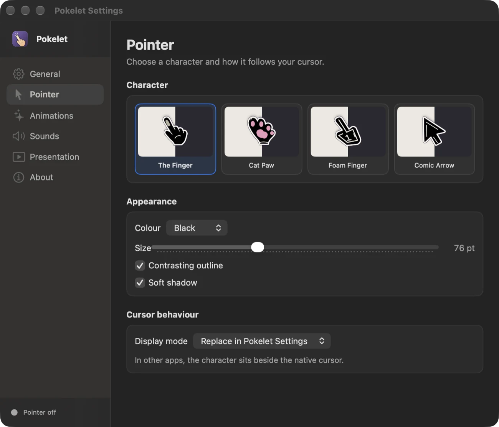

Your cursor has character.
Four animated cursors for your Mac. Pick one and try it as you browse.
Free and open source macOS 14 or later
A cursor that feels like you.
- Make it yours
- Choose a character, adjust its size and add a custom colour or a contrasting outline.
- Set the click response
- Dial up the reaction, show the character only on clicks, or add an optional click sound.
- Keep the Mac cursor you know
- Companion mode sits beside the macOS pointer. Switch it on and off from the menu bar or with a shortcut.

Put a little character on your Mac.
macOS 14 or later · Apple silicon and Intel
View downloads Latest Release NotesInstall Pokelet
- Move Pokelet to Applications.
Open the downloaded DMG, drag Pokelet into Applications, then eject the disk image.
- Open Pokelet.
Launch it from Applications. If macOS blocks it, check the signing status and first-launch instructions in the release notes.
- Turn on the pointer.
Select Enable Pointer from the hand icon in the menu bar, or press Control + Option + P.
If macOS blocks the first launch
If macOS cannot verify the developer, proceed only if you trust the source. Check the release notes and verify the checksum if one is provided. In System Settings → Privacy & Security, choose Open Anyway if offered, then confirm. Stop if macOS reports damage or malware. Apple’s guidance on opening apps
Common questions.
Is Pokelet free and open source?
Yes. Pokelet is a free native macOS app that runs locally without an account. Its source code is available on GitHub under the MIT licence.
Which Macs are supported?
Pokelet’s universal build targets macOS 14 Sonoma and later on Apple silicon and Intel. Check the release notes for the requirements of your download. Hands-on testing used an M2 Mac. Intel and older macOS runtime checks are pending. See the verification record for details.
Can I get my normal cursor back?
Yes. Companion mode keeps the native cursor visible. You can switch Pokelet off from the menu bar or press Control + Option + P using the default shortcut. Cursor replacement works only over the visible content of Pokelet’s active Settings window.
Will it appear when I share or record my screen?
Choose the entire display in your sharing or recording app and check that the overlay appears in its preview. Single-window capture generally excludes it. Whole-display recording was verified on one M2 Mac with an earlier build.
Does it need special permissions?
The public beta needs neither Accessibility nor Input Monitoring. A screen sharing or recording app handles its own macOS permissions.
Can I turn off sounds and animations?
Yes. Sounds are off by default and can be switched off again in Sounds. The Animations settings let you turn off click animations. Pokelet also follows the macOS Reduce Motion setting.
How do I uninstall it?
To clear preferences, remove imported audio and disable launch at login, first choose Settings → General → Reset Settings…. Then choose Quit Pokelet from the menu and move Pokelet from Applications to the Bin.
Is Pokelet an alternative to Pokey?
Pokelet is an independent, open-source alternative to Pokey, with its own artwork and click sounds.